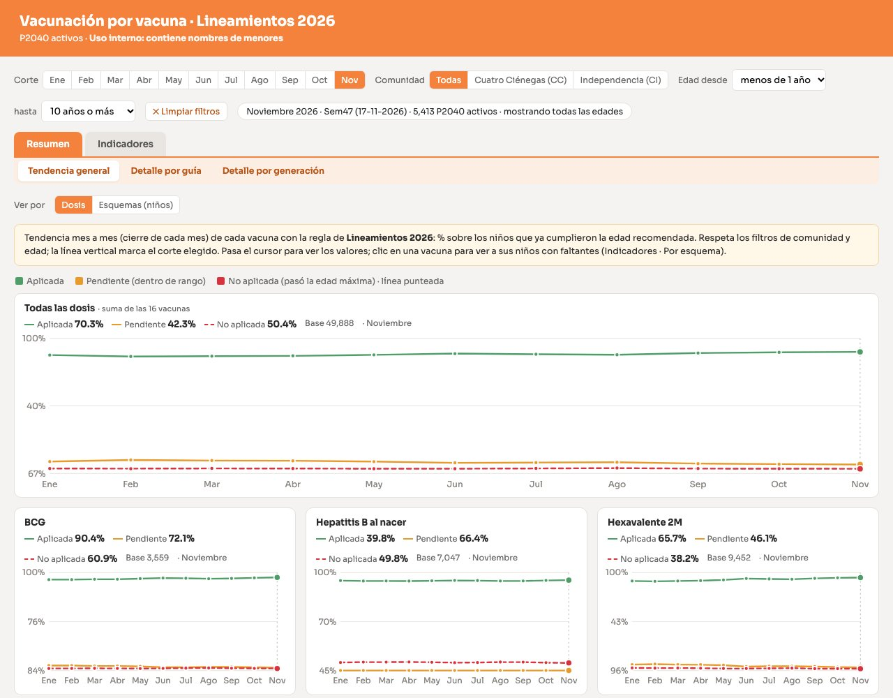
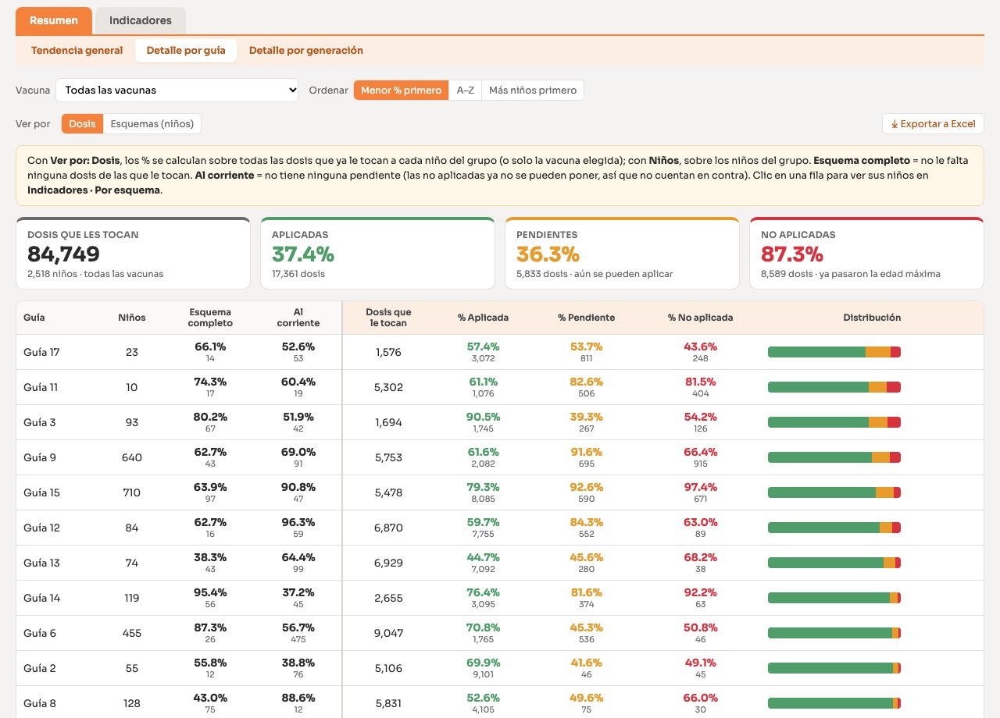
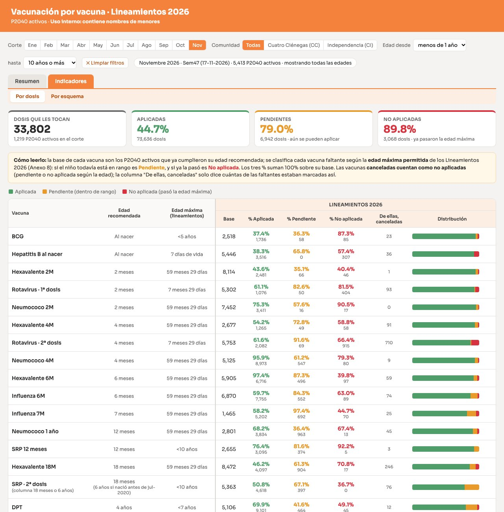

Manual de Vacunas vs Lineamientos 2026
La vacunación vacuna por vacuna con los Lineamientos 2026: qué es aplicada, pendiente y no aplicada, cómo moverte por el reporte y qué cambia contra el cálculo anterior.
1¿Para qué sirve?
Mide la vacunación vacuna por vacuna con los Lineamientos 2026: de los niños a los que ya les toca cada vacuna, cuántos la tienen, a cuántos todavía se les puede poner y a cuántos ya no.
2Cómo se clasifica cada vacuna
La base de cada vacuna son los niños P2040 activos que ya cumplieron la edad recomendada para ponérsela (edad en meses cumplidos al corte).
| Estado | Qué quiere decir |
|---|---|
| Aplicada | Registrada en el CRM (Sí o con fecha). |
| Pendiente | Falta, pero el niño sigue dentro de la edad máxima de los Lineamientos: todavía se puede aplicar. |
| No aplicada | Falta y el niño ya pasó la edad máxima: ya no se puede aplicar. |
- Una vacuna cancelada en el CRM cuenta como no puesta (pendiente o no aplicada según la edad). Si otra columna de la misma vacuna sí está aplicada, gana la aplicada.
- Esquema completo: tiene todas las dosis que le tocan. Esquema al corriente: no tiene ninguna pendiente; las no aplicadas ya no cuentan en contra, porque no se pueden poner.
- Hexavalente y pentavalente se toman como equivalentes; rotavirus son 2 dosis en cualquiera de sus columnas; la 2ª de SRP cuenta capturada a los 18 meses o a los 6 años.
3Cómo moverte en el reporte

- Corte: el mes (Ene…Nov). Comunidad: todas, Cuatro Ciénegas o Independencia. Edad desde / hasta: el rango de edad. Limpiar filtros regresa a todo.
- El renglón gris dice el corte, cuántos niños entran y qué edades estás viendo.
- Ver por: Dosis (porcentaje sobre las dosis que les tocan) o Esquemas (niños) (porcentaje de niños).
4Las pestañas
Da clic en una pestaña para ver qué responde y qué mirar primero.
Resumena fondo¿Cómo va cada vacuna mes a mes, por guía y por generación?
- Tendencia general: una gráfica por vacuna con el cierre de cada mes (aplicada, pendiente y no aplicada). Pasa el cursor para ver los valores y da clic en una vacuna para ver a los niños con faltantes.
- Detalle por guía y Detalle por generación: por cada grupo, cuántos niños, qué parte tiene esquema completo y al corriente, y el reparto de las dosis. Puedes elegir una vacuna, ordenar (menor % primero, A–Z, más niños) y exportar a Excel. Clic en una fila para ver a sus niños.

Indicadoresa fondo¿Cuántas dosis se aplicaron, faltan o ya no se pueden poner?

- Por dosis: dosis que les tocan, aplicadas, pendientes y no aplicadas; y una fila por vacuna con su edad recomendada, su edad máxima, su base, sus tres porcentajes y cuántas faltantes estaban canceladas.
- Por esquema: los niños, uno por uno, con su esquema completo o al corriente y qué les falta.
5Qué cambia contra el cálculo anterior
- Hepatitis B al nacer y rotavirus: antes, pasada su ventana (7 días y 8 meses), salían de la base. Aquí se quedan y, si no se aplicaron, cuentan como no aplicadas. Por eso su base es mucho mayor.
- Cancelada: antes contaba como cubierta; aquí cuenta como no puesta. De ahí sale casi toda la diferencia en las demás vacunas.
- Una columna que no existía en la descarga de ese mes antes se daba por cubierta; aquí se deja fuera de la base.
Lo que el CRM no permite medir
Los intervalos mínimos entre dosis (casi ninguna vacuna trae fecha), la influenza anual (el CRM solo tiene las dosis de 6 y 7 meses) y las vacunas de varicela y hepatitis A (no hay columnas en el CRM).
6Preguntas frecuentes
¿Por qué no coincide con lo que reportábamos antes?
Por las reglas de «Qué cambia contra el cálculo anterior»: sobre todo, las canceladas ya no cuentan como cubiertas y hepatitis B y rotavirus ya no salen de la base.
¿Qué es mejor ver: esquema completo o al corriente?
Al corriente dice si se puede hacer algo hoy: un niño al corriente no tiene ninguna vacuna que todavía se le pueda poner. Completo dice si tiene absolutamente todas.